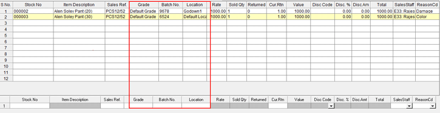
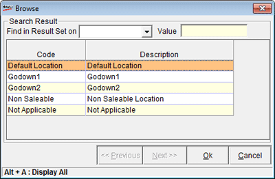

The Batch, Grade and Location enable return with reference screen is displayed as shown.

Grade: Displays the corresponding Grade recorded during billing.
Batch No.: Displays the corresponding Batch recorded during billing.
Location: Displays the location browse window. Select the location to store the returned item(s).

Search Results: Helps to search location.
Find: Select the search based on Code or Description.
Value: Enter the search key
Code and Description: Displays the catalogued location's code and description. Select the desired location.
Note: If return of item(s) is selected as Non Saleable location, then sales of that item(s) can be restricted if configured in System Parameter.